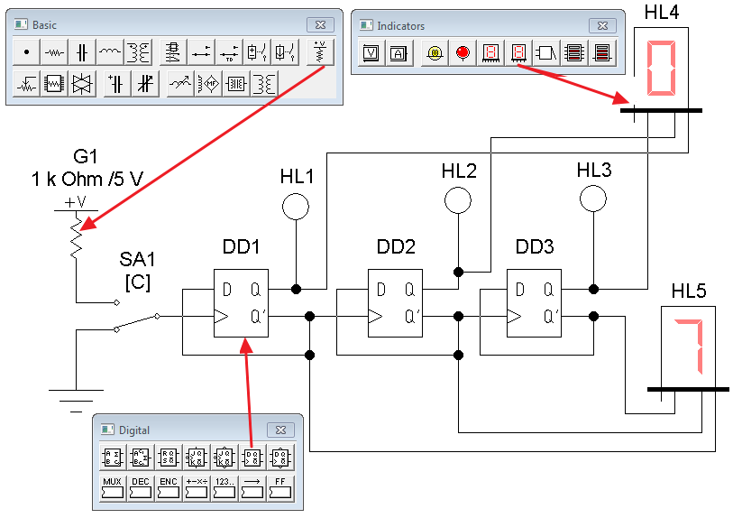
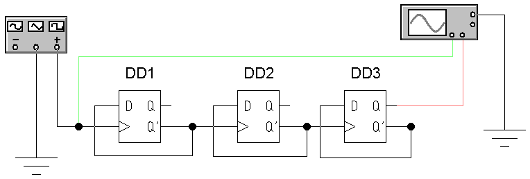
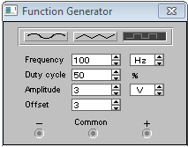
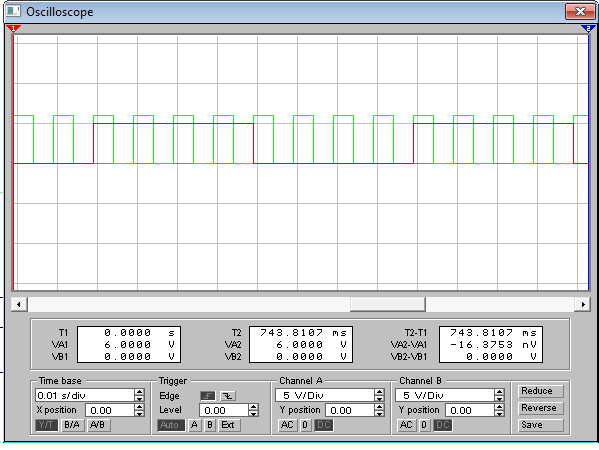

Electronics Workbench
Исследование двоичного счетчика
в программе Electronics Workbench
Подробнее о триггерах можно узнать здесь.
1. Исследование работы двоичного счетчика на на D-триггерах с помощью индикаторов
- В программе Electronics Workbench cоберите модель для исследования двоичного счетчика (рис. 1).

Рис. 1 - Модель схемы для исследования двоичного счетчика на D-триггерах с помощью индикаторов
1. Верхнее по схеме положение переключателя SA1 соответствует подаче логической «1», нижнее положение - логического «0».
2. Положение переключателя SA1 изменяется при нажатии на клавиатуре клавиши«С» .
3. Белый цвет индикаторов HL1-HL3 соответствует логическому «0», красный цвет -логической «1» .
4. Для подачи счетного импульса необходимо нажатием на клавиатуре клавиши«С» переключатель SA1 перевести с нижнего на верхнее положение (0→1). - Установите свойства элементов схемы (табл. 1).
Для установки свойств:- сделайте двойной щелчок на элементе;
- откройте вкладку (Label, Value или Models);
- установите значения.
Таблица 1
Свойства элементов схемы (рис. 2) Наименование Обозначение
элементаВкладка Label
(Свойство:Значение)Вкладка Value
(Свойство:Значение)Нагрузочный резистор, подключенный
к плюсовому выводу источника постоянного
напряженияG1 Label: G1 — Индикатор HL1 Label: HL1 — Индикатор HL2 Label: HL2 — Индикатор HL3 Label: HL3 — Семисегментный индикатор HL4 Label: HL4 — Семисегментный индикатор HL5 Label: HL5 — D-триггер DD1 Label: DD1 — D-триггер DD2 Label: DD2 — D-триггер DD3 Label: DD3 — Переключатель SA1 Label: SA1 Key: C - Щелкните мышкой на кнопке
 в верхнем правом углу, чтобы включить схему.
в верхнем правом углу, чтобы включить схему. - Если индикаторы HL1-HL3 не погашены, нажимайте на клавишу «С» до тех пор, пока они не погаснут.
- Подавая счетные импульсы, определите состояния выходов при помощи логических пробников HL1-HL3 и семисегментных индикаторов HL4-HL5. Результат запишите в табл. 2 в рабочей тетради.
Таблица 2
Таблица состояний двоичного счетчика на D-триггерах № импульса С Q1 (HL1) Q2 (HL2) Q3 (HL3) HL4 HL5 0 (исходное состояние) 0 0 0 0 7 1 0→1 2 0→1 3 0→1 4 0→1 5 0→1 6 0→1 7 0→1 8 0→1 - Щелкните мышкой на кнопке в верхнем правом углу, чтобы выключить схему.
2. Исследование работы двоичного счетчика на на D-триггерах с помощью осциллографа
- В программе Electronics Workbench cоберите модель для исследования работы двоичного счетчика на
D-триггерах с помощью осциллографа (рис. 2).
Рис. 2 - Модель для исследования работы двоичного счетчика
наD-триггерах с помощью осциллографа - Закрасьте провод идущий к каналу А осциллографа в зеленый цвет: сделайте двойной щелчок на проводе и выберите зеленый цвет. На экране осциллографа осциллограмма входного сигнала будет окрашен в зеленый цвет.
- Закрасьте провод идущий к каналу B осциллографа в красный цвет. Осциллограмма выходного сигнала будет окрашен в красный цвет.
- Установите параметры функционального генератора (рис. 3):
- вид сигнала - прямоугольные импульсы;
- частота - 100 Гц (Frequency - 100 Hz);
- амплитуда - 3 В (Amplitude - 3 V);
- коэффициент заполнения - 50% (Duty cycle - 50%) ;
- смещение - 3 В (Offset - 3 V).

Рис. 3 - Настройка функционального генератора
- Сделайте двойной щелчок на осциллографе, чтобы открыть расширенную модель осциллографа.
- Щелкните мышкой на кнопке в верхнем правом углу, чтобы включить схему. Через 3-5 секунд повторно щелкните мышкой на кнопке , чтобы выключить схему.
- Подберите шаг развертки (Time base) и чувствительности каналов (Channel A/Channel B) для получения полного изображения одного периода выходного сигнала (рис. 4).

Рис. 4 - Настройка шага развертки и чувствительности каналов
- Зарисуйте осциллограммы (снимите скриншот) на каналах А и В.
- По осциллограмме определите период и частоту выходного сигнала.
- Щелкните мышкой на кнопке в верхнем правом углу, чтобы выключить схему.
Сделайте выводы по результатам эксперимента.